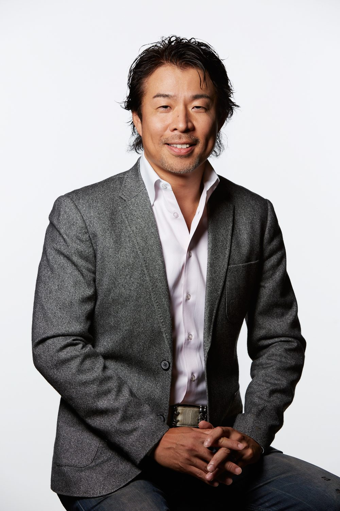

gigantum humeris insidentes
先人が積み重ねてきた知見を、次世代の挑戦者へ。
構想から実装まで伴走する、少数精鋭のアドバイザリーファーム。
Philosophy
"If I have seen further, it is by standing on the shoulders of giants."— Isaac Newton, 1675
人は、先人の知恵と経験の積み重ねの上に立つことではじめて、より遠くを見渡すことができる。社名 G.H.I. — gigantum humeris insidentes は、ニュートンが引いたこの古い言葉に由来します。
私たち自身もまた、数多くの事業の現場で知見を積み上げてきました。その蓄積を次世代の挑戦者へと渡していくこと。それが、私たちの果たすべき役割だと考えています。
What we do
構想段階から事業化、グロースまで。戦略の立案にとどまらず、実行可能な打ち手へと落とし込み、伴走します。
スタートアップから中小・中堅企業まで。経営者の意思決定に寄り添うコーチング／カウンセリング。
人事制度の設計、社員研修・教育訓練のコンサルティング、セミナーの企画・開催まで一貫して。
DX、デジタルサービスに関する総合コンサルティング。技術を事業価値へと接続します。
アジアを中心とした海外市場への進出。現地での立ち上げ実績に基づく、実践的な支援を行います。
How we work
表層の課題ではなく、その背後にある構造を捉える。問いの立て方そのものを問い直すところから始めます。
提言を渡して終わりにはしません。実行の現場に立ち、成果が生まれるまで共に手を動かします。
産業の壁も、国境も越えて。複数の領域を歩んできた経験を、一つの視点に束ねて提供します。
Track record
金融機関の新規サービス開発、デジタルチャネル戦略の立案を支援。レガシー産業における事業変革を伴走しました。
大手ECプラットフォームでの事業統括経験をもとに、販売事業の立ち上げ・拡大、店舗網の構築を支援します。
大手テック企業での新規事業立ち上げ実績を背景に、構想から収益化までのプロダクト戦略を描きます。
ヘルスケア事業の代表経験に基づき、規制産業における新規サービスの設計と事業化を支援します。
コンテンツ・メディア領域における新規事業開発、AI活用によるクリエイティブ事業の立ち上げを支援します。
アジア各地での事業立ち上げ・子会社経営の経験をもとに、海外進出とグローバル展開を支援します。
※ 守秘義務に基づき、具体的な企業名・案件名の記載は控えております。詳細は個別にご相談ください。
Founder

株式会社G.H.I. 代表取締役 CEO
同志社大学経済学部卒業後、住友海上火災保険（現・三井住友海上火災保険）に入社。テイクアンドギヴ・ニーズでは事業立ち上げを経て同社のターンアラウンドを成功させ、2009年に取締役CFOに就任。海外事業担当として上海に赴任し、アジア各地で事業開発を手がけ、各子会社の代表取締役を務めました。
2014年にAmazon Japanへ入社。総合家電事業を統括し、プライムデーや大型家電ストアの立ち上げを主導。LINE株式会社では執行役員として数々の新規事業をリードし、LINEヘルスケア代表取締役を歴任。住友商事を経て、2025年4月より現職。日・英・中のトライリンガル。
Profile